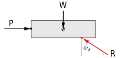

Which types of friction do we study in statics, and which are studied elsewhere?
What is a normal force?
What is impending motion?
How do you decide when you can use the equation \(F=\mu_\text{s} N\) and when you can not?
Can you show graphically how friction and normal force vectors are related to the friction resultant vector and the friction angle at impending motion?
What is the friction angle \(\phi_\text{s}\text{?}\)
Why is a distributed normal force represented as a point force that moves as the normal force shifts?
Dry Friction.
Dry friction, also called Coulomb friction, is a force which appears between two solid surfaces in contact. This force is distributed over the contact area and always acts in whichever direction opposes relative motion between the surfaces. We will usually simplify the distributed frictional force by representing it as a single concentrated force acting at a point, as we did in Section 7.8.
Depending on the details of the situation, dry friction will either hold the object in equilibrium, in which case it is called static friction, or it will retard but not prevent motion, in which case it is called kinetic friction.
Consider the football training sled shown in Figure 9.1.1. Initially, the sled’s weight is supported by a normal force acting on the bottom surface that can be considered as a point force directly beneath the center of gravity; there is no friction force.
When players begin to push the sled, a friction force will appear along the bottom surface which opposes sliding to the right. Both the friction and normal forces can be represented by concentrated horizontal and vertical forces located to the right of the center of gravity. This offset is required to maintain rotational equilibrium against the pushing force. If the players push hard enough, equilibrium will break and the sled will begin to slide in the direction of the push. At this point static friction has transitioned to kinetic friction.
(a)Training sled
(b)Free-body diagram
Figure9.1.1.Static or kinetic friction occurs when motion is impending or occurring.
The rolling friction acting on the motorcycle in Figure 9.1.2 is more complicated. Both wheels rotate clockwise, but the rear wheel is driven by the engine and chain, while the front wheel is rotated by the road friction. The friction force on the rear tire acts to the right and is what propels the bike forward. The dry friction on the front tire acts to the left and retards the motion of the motorcycle.
(a)A motorcycle
(b)Free-body diagram
Figure9.1.2.Rolling friction occurs where the tires contact the road.
The force distribution on the bottom of an object being pushed across a surface is complex, and looks approximately like (a).
To simplify things, we first decompose the actual force into a distributed normal force perpendicular to the surface, and a distributed friction force parallel to the surface, as shown in the (b). These two distributions are further simplified into two concentrated forces representing the normal and friction components of a single resultant force, as show in (c). The net resultant force acts at the point required for equilibrium.
(a)
(b)
(c)
Figure9.1.4.Equivalent representation of friction and normal forces.
Subsection9.1.1Coulomb Friction
The Coulomb friction model proposes that the force of friction is proportional to the normal force, where the normal force is the force acting perpendicular to the contacting surface.
\begin{equation*}
F_f = \mu N
\end{equation*}
The constant of proportionality, \(\mu\text{,}\) is called the friction coefficient. \(\mu\) is always greater than zero and commonly less than one. The friction coefficient can be greater than one for materials that exhibit positive adhesion to each other like silicone rubber, glued surfaces, or gecko’s feet.
(a)Block on rough surface.
(b)FBD showing normal and friction forces.
Figure9.1.5.
Friction has two distinct regions as shown in Figure 9.1.6, and the value of \(\mu\) is different in each region. The region from point one to point two, where the force of friction increases linearly with load is called the static friction region. Here you must use the coefficient of static friction \(\mu_s\text{.}\) The region from point two to point three, where the friction remains roughly constant is called the kinetic friction region. In this region you must use the coefficient of kinetic friction \(\mu_k\text{.}\)
Figure9.1.6.Phases of Coulomb friction.
The coefficient of friction suddenly drops at point two, causing the friction force \(F_f\) to drop as well. Point two is called the point of impending motion, because here the situation is unstable. If the applied force changes ever so slightly, the opposing friction force suddenly decreases and the object begins to move.
To better understand the behavior of Coulomb friction imagine an object resting on a rough surface as shown in Figure 9.1.5.(b). When force \(P\) is gradually increased from zero, the normal force \(N\) and the frictional force \(F_f\) both change in response. Initially both \(P\) and \(F_f\) are zero and the object is in equilibrium. The interaction between the two surfaces in contact means that friction is available but it is not engaged \(F_f=P=0\text{.}\)
As \(P\) increases, the opposing friction force \(F_f\) increases as well to match and hold the object in equilibrium. In this static-but-not-impending phase \(F_f= P\text{.}\)
When \(P\) reaches point two, motion is impending because friction has reached its maximum value. \(F_{f_\text{max}}=\mu_\text{s} N = P\text{.}\) If force \(P\) increases slightly beyond \(F_{f_\text{max}}\text{,}\) the friction force suddenly drops to the kinetic value \(F_f= \mu_k N\text{.}\) The applied force exceeds the frictional force breaking equilibrium and causing the object to accelerate, and accelerating bodies are beyond the scope of Statics!
Notice that friction force at impending motion is always greater than kinetic friction, because the coefficient \(\mu_\text{s} \gt \mu_k\) for most materials. Practically, this tells us that once a material starts to move it is easier to keep moving than it was to get it started from rest.
If you wonder why we include kinetic friction in a statics course, remember that a sliding body moving at constant velocity is in equilibrium.
Subsection9.1.2Friction Angle and Friction Resultant
Recall that a resultants is the sum of two or more vectors. The friction resultant is the vector sum of the friction and normal forces. Since these two forces are perpendicular, the magnitude of the friction resultant can be found using the Pythagorean theorem.
\begin{equation}
R = \sqrt{F_f^2 + N^2}\tag{9.1.1}
\end{equation}
The friction angle \(\phi_s\) is defined as the angle between the friction resultant and the normal force. At impending motion, the friction angle reaches its maximum value. The friction resultant and friction angle are used for screw, flexible belt, and journal bearing type problems.
The maximum friction angle \(\phi_s\) is directly related to the coefficient of static friction \(\mu_\text{s}\) since the friction angle \(\phi_s\) is the internal angle of the right triangle formed by the normal force \(N\text{,}\) the friction resultant \(R\text{,}\) and the friction force \(F\text{.}\) Hence:
In Figure 9.1.7 a block of weight \(W\) is pushed sideways by force \(P\text{.}\) The reaction forces can be represented as separate friction and normal forces, or as combined friction force \(R\) acting at friction angle \(\phi_s\text{,}\) measured from the normal direction.
(a)Force components.
(b)Resultant and Friction angle.
Figure9.1.7.
Subsection9.1.3Normal Forces
The normal force supporting the object is distributed over the entire contact surface, however it is common on two dimensional problems to replace the distributed force with an equivalent concentrated force acting at a particular spot on the contacting surface, as we did in Chapter 7. This point is rarely at the exact center of the contact surface.
This is illustrated in Figure 9.1.8 where we see in that an object at rest has a uniformly distributed normal force along the bottom surface and the resultant normal force is located directly below the weight. The friction force is not engaged. When a pushing force \(F_\text{push}\) is applied, the distributed normal force changes shape, and the resultant normal force \(N\) shifts to the right to maintain equilibrium. The resultant normal force continues to shift to the right the harder you push.
This can be understood from the principle of a two-force body. As we discussed previously, the combined push and weight can be represented a single load acting down and to the right. The friction and normal forces can be combined into a single reaction force acting up and to the left at a point on the bottom surface. These two forces must share the same line of action to maintain equilibrium, so as the pushing force increases, the friction angle changes and the point shifts to the right. If the point shifts off the physical object then the required friction is greater than the friction available and motion begins.
This represents a block on a frictional surface. You can adjust the weight \(W\) and push \(P\) to see how they affect the distributed normal force. The diagram assumes that there is sufficient friction to prevent slipping or tipping, so \(F_f = P\) under all conditions. If there is no normal force the object is not in equilibrium.
Figure9.1.8.Distributed Normal force changes with load and weight.
Subsection9.1.4Coulomb Friction Examples.
Static, but not impending motion.
For these problems \(F_f\) is independent of \(N\) so you will need one additional piece of data in order to solve for both \(F_f\) and \(N\) since you will not be able to apply the equation \(F_f=\mu N\text{.}\) The problem statement will use words like ‘sitting’, ‘static’ or ‘at rest’, but no extremal language like ‘maximum’.
Example9.1.9.
A moment of \(\Nm{20}\) is applied to a wheel held static by a brake arm. What is the friction force between the wheel and the brake arm?
Example9.1.10.
A box sits on a slope, find the resultant of the friction and normal forces on the box.
Impending motion.
In this case, the friction force will be given by \(F_f = \mu_\text{s} N\text{.}\) The problem statement will mention maximum or minimum values.
Example9.1.11.
What is the maximum force applied to the box before it will start to move?
Example9.1.12.
What is the minimum coefficient of static friction that will keep the box static? What is the lightest box which will not slip or tip on this slope?
Example9.1.13.
What is the lightest box which will not slip or tip on this slope?
Kinetic friction.
In these problems, \(F_f = \mu_k N\text{.}\) The problem statement will say that the body is moving at a constant velocity.
Example9.1.14.
A \(\kg{40}\) box is sliding down a 20° slope, what is the coefficient of friction to keep the velocity constant?
Example9.1.15.
A rope slips over a surface at constant velocity, what is the contact angle of the rope?